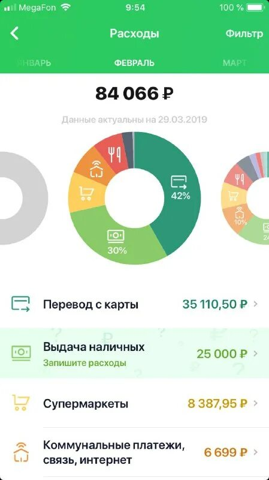
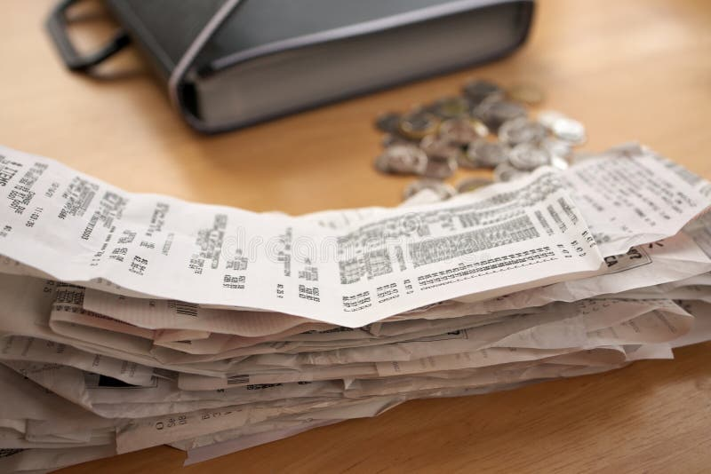
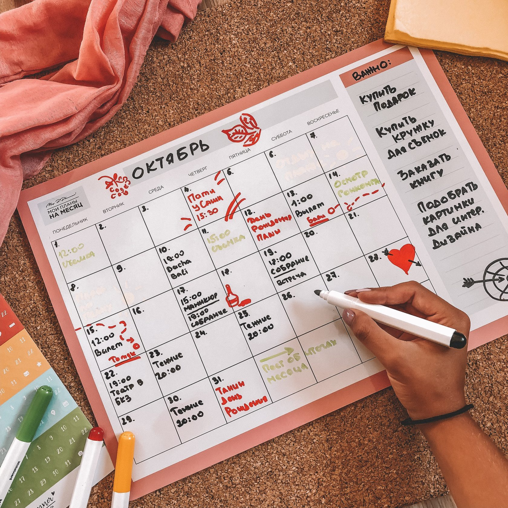

Почему учёт бросают
Первые дни записывать траты интересно: каждая покупка превращается в маленькое открытие. Потом новизна проходит, а пропущенных чеков становится всё больше. Через неделю восстановить, куда ушли деньги, уже невозможно, и кажется, что весь учёт потерял смысл.
Обычно мешают три вещи: записывать неудобно, категорий слишком много, а пользы пока не видно. Хорошая новость в том, что все три решаются привычками, а не силой воли.
Пять привычек

- Записывай сразу. Расплатился — достал телефон. Сумма и категория занимают десять секунд, а вечером ты уже не вспомнишь, сколько стоил обед.
- Оставь мало категорий. Восьми хватит. Когда их тридцать, каждый раз приходится думать, куда отнести покупку, и записывать становится лень.
- Не стремись к точности. Ошибка в двадцать рублей ничего не меняет. Важна картина месяца, а не копейки.
- Привяжи учёт к ритуалу. Например, проверяй записи каждый вечер, пока закипает чайник. Новая привычка лучше держится за старую.
- Смотри итоги раз в неделю. Именно в этот момент учёт начинает приносить пользу: видно, какая категория растёт быстрее остальных.
Не нужно внедрять всё сразу. Начни с первой привычки, через неделю добавь вторую — так ни одна не покажется обузой.
Сколько это занимает
Кажется, что учёт отнимает много времени. На деле за месяц набирается около часа:
- Одна запись
- 10 секунд
- Пять записей в день
- меньше минуты
- Итоги недели
- 10 минут
Получается примерно полчаса на записи и 40 минут на итоги за месяц. Это как пара серий сериала, а взамен ты точно знаешь, куда ушли деньги.

Если пропустил несколько дней

Не пытайся восстановить всё до рубля. Посмотри выписку из банка, запиши крупные траты, а мелочь, которую не помнишь, внеси одной записью в категорию «Другое».
Главная ошибка — решить, что месяц уже испорчен, и бросить. Неполные данные всё равно полезнее, чем никаких: общая картина видна и с пробелами.
С чего начать сегодня
Запиши первую трату прямо сейчас — хотя бы утренний кофе или проезд. Завтра запиши ещё одну. Через неделю открой ленту месяца и посмотри, что получилось.
Записать трату